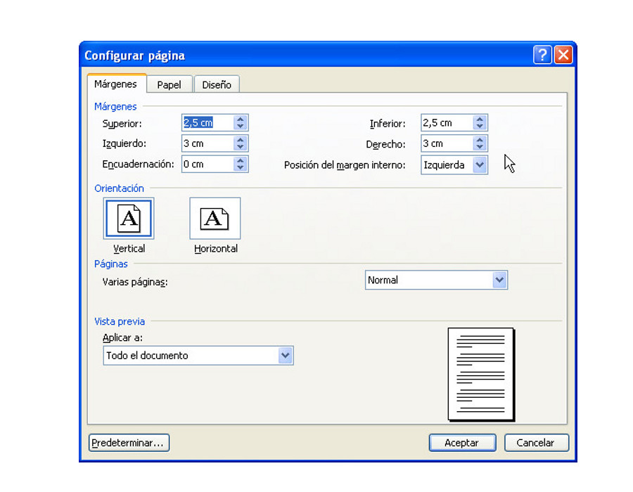
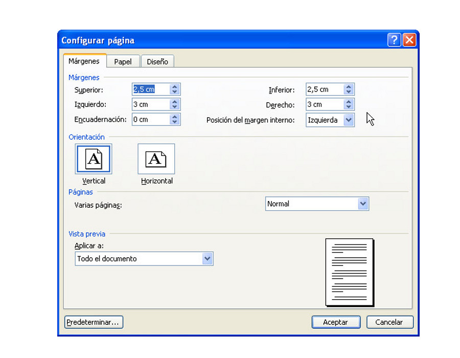
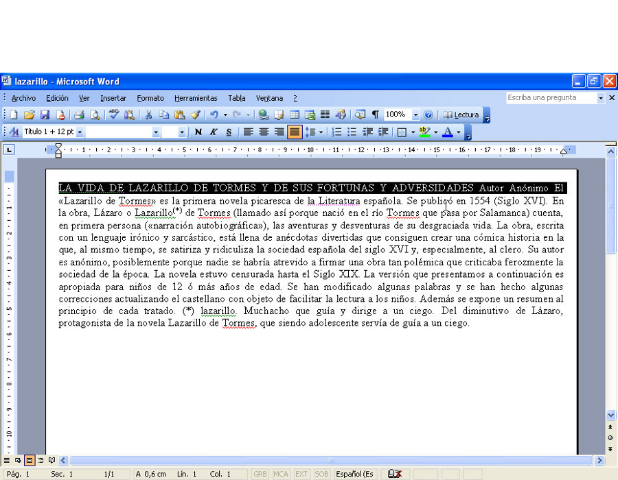
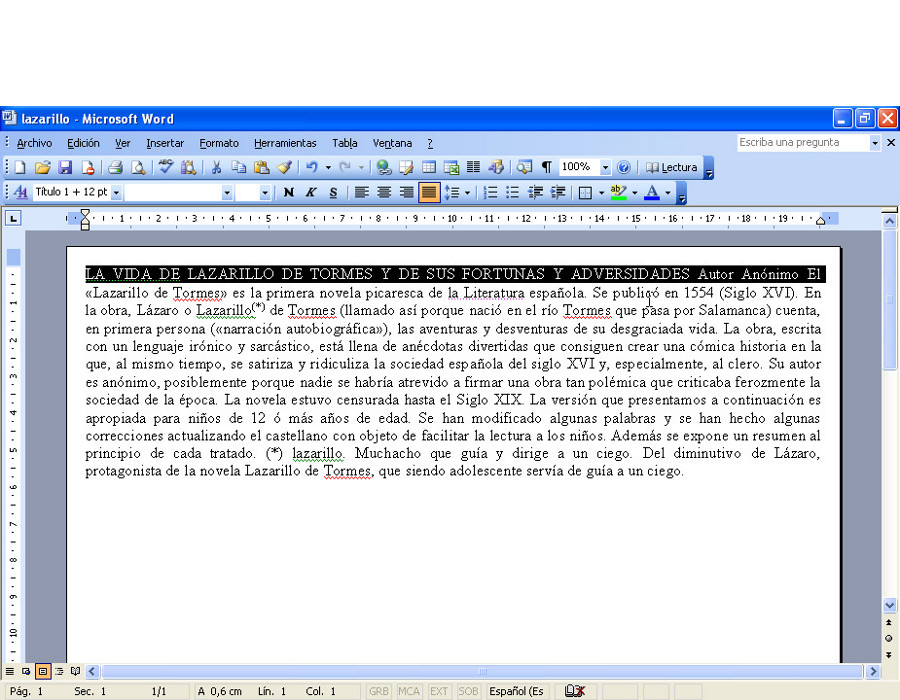

Universitat per a Majors
Word
Consideraciones finales
Apreta la tecla → para avanzar.


Hemos visto que con Word se pueden realizar acciones de formateado de documento que si las sabemos aplicar podemos crear documentos con un acabado muy aparente.
Hasta ahora hemos visto:
Vamos a asentar conceptos, contaremos algunos trucos que nos resultarán muy útiles para trabajar con nuestros documentos e intentaremos crear algún documento que haga uso de todo lo que hemos visto.
Una vez redactado el documento, es interesante visualizar cómo quedaría caso de mandarlo a imprimir, para ello podemos utilizar la utilidad de Vista preliminar.
Simplemente pulsaremos el icono asociado en la barra de herramientas para ver una representación de cómo se imprimirá el documento.
Si queremos terminar la visualización de Vista preliminar deberemos pulsar el botón de Cerrar para volver de nuevo a la edición del documento.
Cambia de foto con las teclas: ↑ y ↓
En ocasiones necesitamos que el texto de nuestro documento se separe en varias páginas, aunque no hayamos ocupado la totalidad del espacio. Esto es lo que se llama el salto de página.
Podemos añadir un salto de página de la siguiente manera:

Cambia de foto con las teclas: ↑ y ↓
Ya habíamos comentado que existen unos márgenes que aplican a nivel de documento, que son comunes para todo el texto de nuestro trabajo.
Pero también podemos aplicar márgenes específicos para cada uno de los párrafos de nuestro documento, de 2 maneras:

Los margenes establecen la separación que queremos dejar en nuestro documento del texto con respecto al borde de la hoja, tanto horizontal como verticalmente.
Se establecen globalmente (para todo el documento) y se representan en la regla superior e izquierda que podemos ver en nuestro documento.
Para cambiar los márgenes hacemos doble click con el ratón sobre la zona perteneciente al margen del documento.

 

 

Cambia de foto con las teclas: ↑ y ↓
Los margenes de párrafo podemos modificarlos para cada uno de los párrafos de nuestro documento.
Se establecen globalmente (para todo el documento) y se representan en la regla superior e izquierda que podemos ver en nuestro documento.
Para cambiar los márgenes hacemos doble click con el ratón sobre la zona perteneciente al margen del documento.
Cambia de foto con las teclas: ↑ y ↓